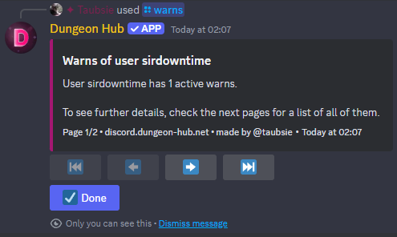
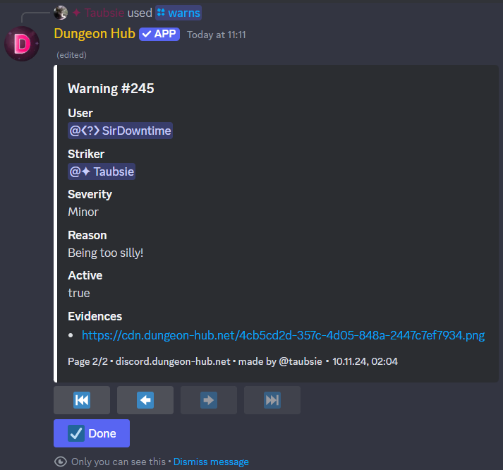

/warns
Examples
 
Description
This command allows you to see your active warnings. It will show you the number of active warnings you have, as well as all other attached information (e.g. reason, evidences, ...).
If you have the permission Moderate Members, you can also see the warnings of other users by specifying a target.
Arguments
Name | Type | Description | Optional? | Additional |
|---|---|---|---|---|
| User | The user to get the warns of. | ✅ Yes |
27 December 2025